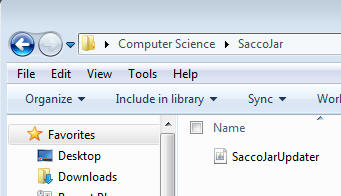
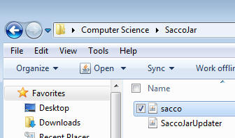
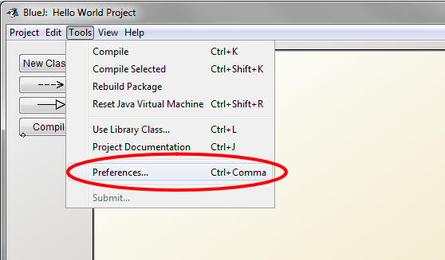
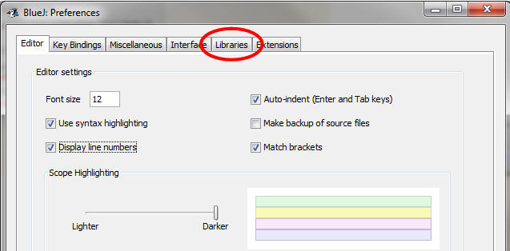
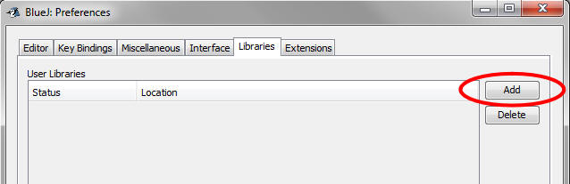
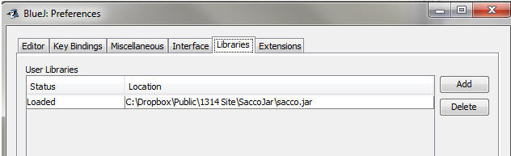
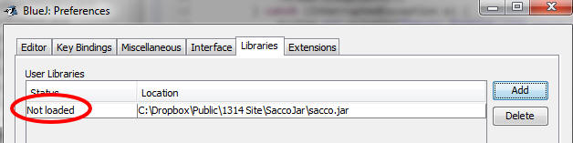

Mr. Sacco has created a library of class files that are useful for learning certain topics. In order to be able to import these classes you must download and link BlueJ to them.
1) Set up a folder: Create a folder in your computer science folder named SaccoJar. Remember this location; you will have to find it later.
2) Download the SaccoJarUpdater.jar file. Right-click the link to the left and use the save as or download as option. Make sure that you save it in the folder you created in step 1

3) Double click the SaccoJarUpdater that you just downloaded. It should automatically download a file named sacco.jar, which is the file that we really care about.

4) Open BlueJ: In the Tools menu select Preferences

5) In the Preferences window, select the Libraries tab.

6) At the moment you should have no libraries. Click the Add button.

7) Navigate to your saccojar folder and select the sacco.jar file (DO NOT SELECT THE UPDATER). Click OK

Double check to make sure that the Location ends in .jar
If it doesn't end in .jar you've selected the folder instead of the file. Try again.
8) If done correctly, the screen will show the location as registered, but Not Loaded. You will need to click OK, then close BlueJ entirely and reopen it in order to have it loaded and ready to use.

After restarting it should say Loaded if you check the same location. That means it's ready to go.
Testing if it worked:
Sometimes it can be difficult to tell if you've set up the jar properly. If you have, you should be able to compile and run the following program:
import sacco.*;
public class SaccoJarTest
{
public static void main()
{
Picture p = Picture.loadFromJar("Sacco.png");
p.display();
}
}
If it compiles you've probably linked accurately, but feel free to run the method to get a little more Sacco in your life.